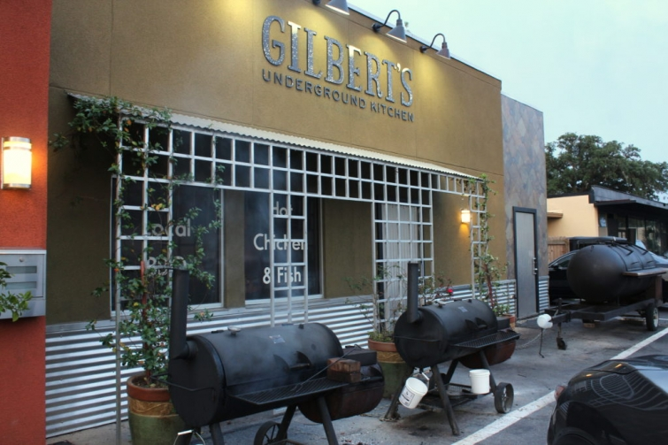
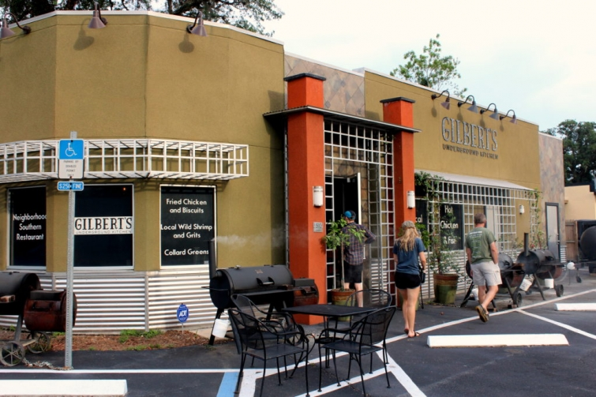

.png)
.PNG)
.PNG)
.PNG)
.PNG)
.PNG)
.JPG)
.JPG)
.PNG)
.PNG)



In our last post, we looked at a number of restaurants in Fernandina Beach, Florida, and I told you there was one additional restaurant that was a little more “fall-ish” that I wanted to share with you. So here we are today at Gilbert’s Underground Kitchen. It probably doesn’t feel any more like fall than any other eatery in the area, but I typically think of seafood in the summer at the beach, and this is not a seafood restaurant. This is more comfort food, and that is what makes me think of fall.
If you have been a long time fan of Top Chef, you may remember chef Kenny Gilbert from season 7. He began cooking at the age of 3, and has pretty much been cooking all the time since then – from preparing his family’s entire Thanksgiving meal at age 11 to cooking for his school’s swim team in high school, to attending culinary school, to working as chef at the Ritz-Carlton and other fine resorts, to preparing meals for President Bush, the G8 Summit, and Oprah Winfrey. Yes, Kenny Gilbert has done a lot of cooking!
This past May, he competed against Bobby Flay on Beat Bobby Flay, and he won! 🙂 (You can find the recipe for his winning chicken and dumplings here.) So when we read that he had opened his own restaurant in Fernandina Beach, we definitely wanted to give it a try.
The interior of Gilbert’s Underground kitchen is divided into 3 spaces: The Safe House Lounge, Muscadine Hall and Datil Pepper Park (an outdoor dining space.)

Antique accessories are scattered throughout the restaurant to give it the feel of a Southern home.
We LOVED the spatterware and mason jar table settings!
They were just perfect for the place.
Now let’s take a look at the menu(s). We actually could have ordered the dishes that he prepared in his episode of Beat Bobby Flay…
but we found so many more things of interest on the “regular” menu that we decided not to go for the Beat Bobby Flay dishes.
We started with coffee and an appetizer…
of delicious pimento cheese with crackers and veggies.
Then my husband ordered the shrimp and grits which he did enjoy.
Our son had the 1/2 Fernandina Beach Hot Chicken – flavorful-ly spicy, but not burn-your-mouth hot.
Then we (yes, “we,” not just “me”) ordered the Ulimate BBQ Sampler so that we could all try their sausage, spare ribs, gator, turkey legs, and other dishes. I am usually not very adventurous in trying different meats, but these were all quite tasty, and it was fun to experiment with the variety of foods there…and goodness was it a large amount!
I ordered one side dish – Hoppin John. I was expecting black eyed peas on rice with ham, and this did not taste like my traditional dish, so I did not care very much for it. The next time we go, I think I want to order the cast iron roasted broccoli.
Even though we had eaten waaaay too much (and still had a large amount left to take home) we wanted to try one of their desserts (of course! 🙂 ) The GUK S’mores sounded good:
“Bittersweet Chocolate Creme Brulee, Crushed Gingersnap Cookies, Toasted Marshmallows”
(How could we resist?!)
It was pretty good. Although the marshmallows were charred, they were still not soft enough for me (but we ate it all. LOL) The strawberry shortcake will be my choice on our next visit – after I lose 10 more pounds!
And that was our visit to Gilbert’s Underground Kitchen. I hope you will have an opportunity to try it out on a visit to Amelia Island, Florida. (It is especially fun with a group. 🙂 )
In other news, my mom and I had our yard sale yesterday – exhausting, productive, and profitable! So perhaps life will return to normal now that I do not have to spend my time cleaning out every nook and cranny around here. My next post to share with all of you is about plans for a small dream lake house – and I am thinking of going in a very different direction with the interior decor for it. (And remember, this is still in the dream stage, so please don’t send a realtor to put a for sale sign in front of our house. 🙂 )
Have a great start to your last week of September!
Until next time…


.PNG)
Your description of the meal is captivating! I have to say, though, I would have sent the marshmallows back. Blackened catfish? Yes. Carbonized marshmallows…um, no. I think they torched them a little too far! All your posts are such treats! I look forward to them all.
Kelly,
I love love love your blog. Just wondering if you are going to get back to sharing your incredible decorating, and lovely home with us. I miss your inspiration.
When I saw the menu I hoped someone would choose the shrimp and grits. I knew it couldn’t be you. I am glad your husband chose that. The tableware was interesting. I am looking forward to your lakehouse plans. I hope you don’t go too tiny though.
What a great sounding meal at Gilbert’s. Your pictures make my mouth water! Good job on the yard sale. I don’t have them anymore, but love to go, and I meant to check with you about the date for yours. Hate that I missed it!!
Kelly,
We watch Beat Bobby Flay and I remember this episode. Interesting to hear your account of the restaurant and of the specific dishes you ordered.
I love reading about dream decor—especially for a lake cottage. I’ll look forward to your return to blog land.
xo,
Karen
Yummy!! I haven’t ever watched Top Chef so wasn’t familiar with the chef, but I love southern themed restaurants!! 🙂 I’m going to check out the chicken and dumplings recipe. It’s that time of year for comfort food. Looking forward to your “dream lake house” post. Dreaming is fun!!
I just love reading your blog…you are definitely my go to person for travel.
I am anxious to see the plans for the lake house, I have been on a kick with all the Tiny House shows. I told my hubby that as soon as we decide that this house is just too much for us I want a smaller house and he can have his large barn. That is “my” plan, his is quite different with wanting an industrial type building with our house at one end and his work shop takes up the rest of the space.
Hope your yard sale was worth it…that is a lot of work and I gave up on doing them a few years ago.
Thanks for sharing the info on Gilberts. We will be sure to try it next summer when we visit there. I can’t wait to see your dreams for your lake house. What lake do you want to build on? My husband says he never wants to build another house but it is really the only way to get what you want. I am betting this will be your last move too.
The variety at the restaurant looked scrumptious. Thanks for sharing. I loved the table setting. I have some blue spatterware that I haven’t used in quite a while. It makes me want to plan a good fall meal and use it again! Hope you will relax today, because I know how hard you had to work for an all day yard sale. Glad it was a success! Have a great week. Looking forward to dreaming with you for the lakehouse plans.
Oh it all sounds fabulous. I am hungry now.
Yard sale? Yikes! What a chore! You deserve to put your feet up.
As for the restaurant, love it all, except I have to cringe at the mason jars. My grandmother worked hard to save her green stamps to provide real drinking glasses for her table. Bless her long-departed heart!
———————————————————————
Yup. My mom and I said this one was our FINAL yard sale EVER. It took me 6 hours to just put out all of my stuff, and even after starting at 7:00 a.m. we still had people stopping to shop at 4 in the afternoon when we were trying to take it all down.
And yes, bless your grandmother’s heart for her S&H green stamp glasses. I think we had some from there as well…olive green Whitehall cubist pattern. Remember those? 🙂
I dig the dishes! I wondered if they were ceramic, but I saw a chip on an edge, which looked like metal.
——————————————————————–
I did too, Kay! And yes they are metal enamelware. You can find them here: http://www.roveandswig.com/collections/dinnerware/products/enamelware-dinner-plate-d20?variant=1181853139 I am always tempted to purchase some every time I see them somewhere.
Kelly
Chicken and dumplings are my husband’s favorite meal. I copied the recipe and will definitely make this for him. Thanks for sharing.
——————————————————————–
Yum! I hope you both enjoy the recipe. My husband’s grandmother used to make them all the time.:)
Kelly